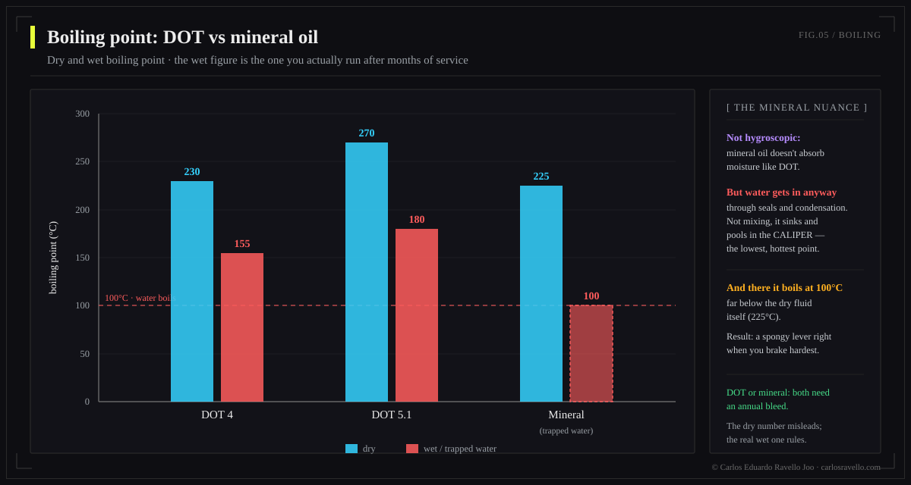
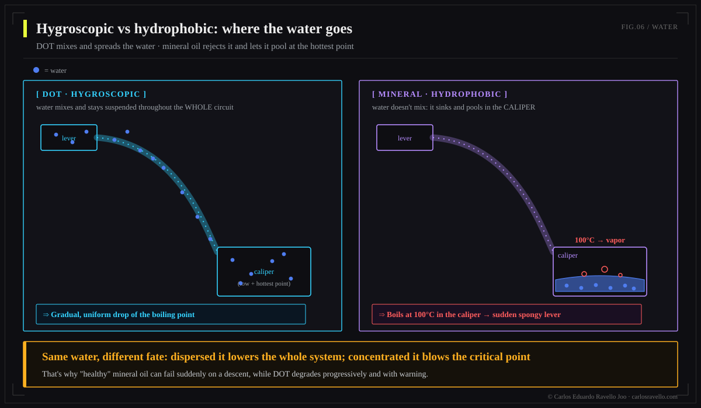

DOT and mineral oil are not interchangeable: different chemistry, different seals. DOT (glycol-based, EPDM seals) is hygroscopic —absorbs water and lowers its boiling point over time (DOT 5.1: ~270°C dry → ~180°C wet)— and tolerates more heat; used by SRAM, Hope, Hayes, Formula. Mineral oil (petroleum-based, nitrile seals) is hydrophobic and stable, but water pools in the caliper and boils at 100°C; used by Shimano, Magura, TRP and the new Brembo GR-PRO. Use your manufacturer's fluid and never mix them.
This is the fluid chapter of the Hydraulic Brake Encyclopedia. The question "DOT or mineral?" is the wrong one: you don't choose —your brake's design does. What you can and should understand is why they're incompatible and how each one fails, because that changes your maintenance.
Two chemistries, two worlds

DOT (Department of Transportation, the automotive standard) is glycol-ether based. Mineral oil is refined petroleum based. This isn't a brand difference: it's a chemical family, and it drags everything else with it —how they handle water, which seals they tolerate, how they age—.
| Property | DOT 4 | DOT 5.1 | Mineral oil |
|---|---|---|---|
| Chemical base | Glycol-ether | Glycol-ether | Refined petroleum |
| Dry boiling point | ~230°C | ~270°C | ~225°C |
| Wet boiling point | ~155°C | ~180°C | n/a (no absorption) |
| Relation with water | Hygroscopic | Hygroscopic | Hydrophobic |
| Corrosive / harms paint | Yes | Yes | No |
| Compatible seals | EPDM | EPDM | Nitrile |
| Change interval | 6-12 months | 6-12 months | 12-24 months |

The water paradox: where it ends up matters
Water is the common enemy, but they face it in opposite ways. DOT absorbs and suspends it across the whole circuit: the boiling point drops gradually and globally. Mineral oil rejects it: the denser water falls to the lowest, hottest point —the caliper— where, under braking heat, it boils at 100°C and creates compressible vapor: a sudden spongy lever (sudden fade) and localized corrosion.

Why you must never mix them
Glycol (DOT) and petroleum (mineral) attack different seals. Putting DOT in a mineral system —or vice versa— swells, softens or dissolves the seals (EPDM vs nitrile) within hours: leaks, loss of pressure and lever to the bar. No "emergency bleed" fixes it; you must rebuild with the correct seals.
Which fluid each brand uses
| Mineral oil | DOT (4 / 5.1) |
|---|---|
| Shimano | SRAM / Avid |
| Magura | Hope |
| TRP · Tektro | Hayes |
| Campagnolo · Clarks | Formula |
| Brembo GR-PRO (2026, own formula) | — |
Fresh data: part of SRAM's modern MTB line moved to mineral (DB8, Maven), and the Shimano XTR M9220 (2025) introduced a low-viscosity mineral oil that fixed the "wandering bite point." The premium industry leans toward mineral for its stability and because it neither harms paint nor is toxic. When in doubt, read the reservoir cap or the manual: the maker prints which one applies.
Intervals and best practices
Change DOT every 6-12 months (sooner in wet climates) due to its hygroscopy; mineral every 12-24 months. Always with fresh, sealed fluid —an opened bottle of DOT starts absorbing humidity—. And remember: a fluid change doesn't clean an already-contaminated system; that's another story.
BikeLab Studio.
Frequently Asked Questions
Can I use DOT in a mineral-oil brake (or vice versa)?
No, never. They are incompatible chemistries: DOT uses EPDM seals and mineral uses nitrile. The wrong fluid swells or dissolves the seals within hours, causes leaks and leaves the brake with no pressure. Use only what your manufacturer specifies.
Which fluid does my brake brand use?
Mineral: Shimano, Magura, TRP, Tektro, Clarks, Campagnolo and the new Brembo GR-PRO. DOT: SRAM/Avid, Hope, Hayes and Formula. SRAM moved part of its MTB line to mineral (DB8, Maven). Check the reservoir cap or the manual.
Why does DOT lose power over time?
Because it's hygroscopic: it absorbs moisture, which lowers its boiling point (from ~270°C dry to ~180°C wet in DOT 5.1). On long descents it boils sooner, creates vapor and the lever goes spongy. That's why it's changed every 6-12 months.
If mineral oil doesn't absorb water, is it immune?
No. It's hydrophobic, so any water doesn't mix: it pools in the caliper (the lowest, hottest point) and boils at 100°C under braking heat, causing sudden fade and corrosion. It's more stable, but still changed (12-24 months).
DOT 4 or DOT 5.1?
If your brake accepts both, 5.1 has a higher boiling point (~270/180°C) than 4 (~230/155°C), better for demanding descents. Both are glycol and compatible with each other. Never use DOT 5 (silicone): a different, incompatible chemistry.
References
- BikeRadar — Brake fluid: mineral oil vs DOT.
- Epic Bleed Solutions — DOT vs mineral oil; dry/wet boiling and hygroscopy.
- Manufacturer manuals (Shimano, SRAM, Magura, Hope) — fluid type and seals.
- Pinkbike — Brembo GR-PRO (own mineral oil formula, 2026).